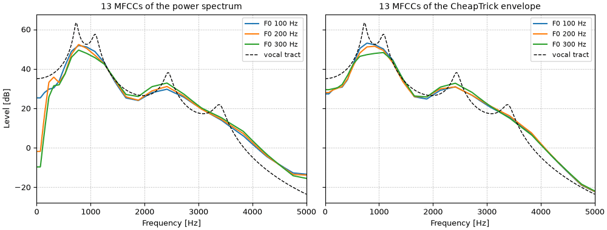
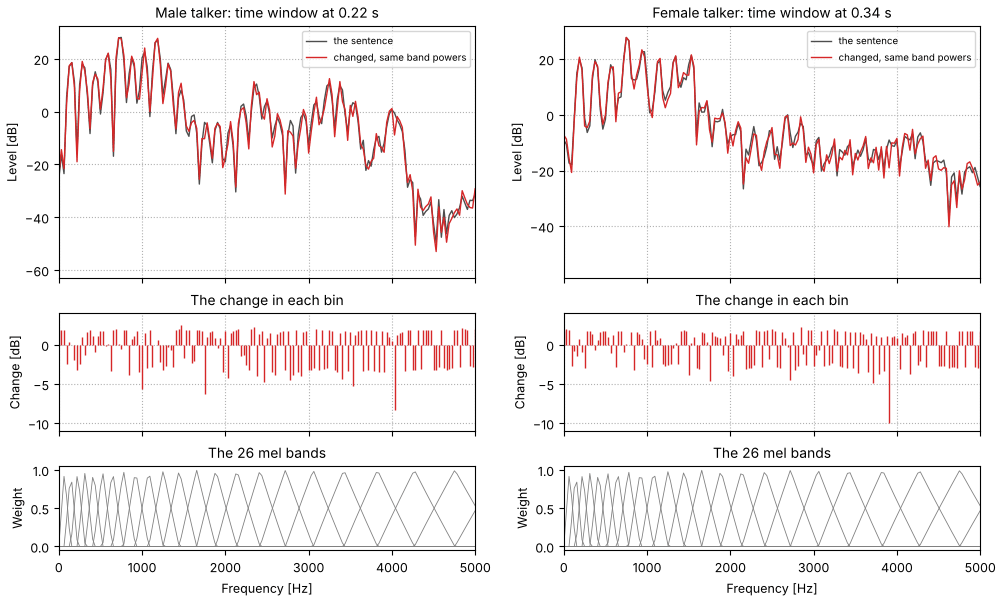

A voiced sound is, to a first approximation, a train of glottal pulses filtered by the vocal
tract (see Formant synthesis). In the spectrum the two multiply: the pulses
give a comb of harmonics at multiples of F_0, and the tract shapes their heights into
formants. The shape is the spectral envelope, and it is what this page measures. Take the
logarithm and the product becomes a sum. The cepstrum is the Fourier transform of that log
spectrum (Bogert et al., 1963):
c(q) = \mathcal{F}^{-1}\{\ln |X(f)|\}(q)
Its variable q, the quefrency, is a time. The envelope varies slowly along frequency, so it
lands at low quefrencies, the first few milliseconds. The harmonics ripple the log spectrum
once every F_0 hertz, so they land at one period, q = 1/F_0, as a peak. The two parts of
the voice that were tangled in the spectrum come apart, and can be measured or edited
separately. The peak is a pitch estimate, which Pitch tracking
takes up; this page keeps the rest.
One time window: a log spectrum, its cepstrum, the envelope a lifter recovers, and CheapTrick's.
Press play and a line follows the sound across every time axis in its plots. Click any time
axis to play from that point. Start with your volume low.
To run this page yourself, open it as a notebook in Colab or download it. It is the same code, and it fetches the recordings it needs from the sonore repository.
The sentence, and code the examples share
Both talkers of Two talkers. Every cepstrum below is taken from an STFT with
Hann windows 40 ms long, every 5 ms, long enough to hold several periods of either voice (see
Pitch tracking). Where a lifter needs each time
window's pitch, it comes from WORLD's Harvest track (Morise, 2017), stored with each recording.
Setup, the same on every page
import os
import urllib.request
import matplotlib.pyplot as plt
import numpy as np
import sonore as so
plt.rcParams.update({"font.size": 9, "axes.titlesize": 10, "figure.dpi": 100})
def fetch(path):
"""A file from the sonore repository, by its path there: the local copy when this runs from
the repository root, otherwise downloaded from GitHub to the same relative path."""
if not os.path.exists(path):
os.makedirs(os.path.dirname(path) or ".", exist_ok=True)
urllib.request.urlretrieve("https://raw.githubusercontent.com/choyun1/sonore/main/" + path, path)
return path
def finish(snd):
"""How every sound in the gallery is played: 5 ms ramps, RMS 0.1, peak at most 0.95."""
snd = snd.ramp(5e-3).normalize(rms=0.1)
return snd.normalize(peak=0.95) if snd.peak > 0.95 else snd
Code
from scipy.fft import dct, idct
from sonore.core.utils import freq_to_mel
from sonore.views.mfcc import mel_filterbank
# The two talkers, by the CMU ARCTIC speaker names. Sources: docs/speech/SOURCES.md.
SPEAKERS = {"Male talker": "bdl", "Female talker": "slt"}
talkers = {
label: finish(so.load(fetch(f"docs/speech/{speaker}_arctic_a0131.flac")))
for label, speaker in SPEAKERS.items()
}
tracks = {label: so.f0_track(snd) for label, snd in talkers.items()}
# WORLD's Harvest track of each recording: times and F0, every 5 ms, 0 where unvoiced.
harvest = {
label: np.loadtxt(fetch(f"docs/speech/{speaker}_arctic_a0131_f0.csv"), delimiter=",", skiprows=2).T
for label, speaker in SPEAKERS.items()
}
fs = talkers["Male talker"].fs
stfts = {label: so.STFT(snd, win_dur=0.040, hop_dur=0.005) for label, snd in talkers.items()}
cepstra = {label: so.Cepstrum(stft) for label, stft in stfts.items()}
FMAX = 5000
def show_pair(sounds, title, win_dur=0.005):
"""One spectrogram per talker, side by side; returns the figure and the playhead's panels."""
fig = plt.figure(figsize=(10, 3.2), layout="constrained")
playhead = {}
for column, (label, snd) in zip(fig.subfigures(1, 2), sounds.items(), strict=True):
ax = column.subplots()
so.STFT(snd, win_dur=win_dur, hop_dur=0.001).plot(ax, db_range=60, colorbar=False, fmax=FMAX)
ax.set(xlim=(0, snd.duration), title=f"{label}: {title}")
playhead[label] = [ax]
return fig, playhead
One time window
Take one time window in the middle of a vowel. Its log spectrum is a comb of harmonics riding
on the formant envelope. Its cepstrum has most of its weight in the first few milliseconds, and
one clear peak at the pitch period. Keeping only the quefrencies below half a period (a
lifter, the cepstral counterpart of a filter) and transforming back gives a smooth envelope.
The female talker's voice is higher (see Two talkers), and that moves
both marks. The cepstral peak sits at a shorter quefrency, closer to the envelope's part of the
cepstrum, though still clear of it. And the lifter at half a period has to cut lower, so it
keeps fewer quefrencies, and the envelope it recovers is smoother: with the harmonics farther
apart, the spectrum samples the envelope less often (see Harmonics sample the
envelope), and there is less of it to recover.
Code
TIMES = {"Male talker": 0.50, "Female talker": 0.60} # one time window in a vowel of each sentence
window = {}
for label, cep in cepstra.items():
t, f0, peak = cep.f0()
i = int(np.argmin(np.abs(t - TIMES[label])))
window[label] = {"i": i, "t": t[i], "f0": f0[0, i], "peak": peak[0, i], "cutoff": 0.5 / f0[0, i]}
print(
f"{label}: time window at {t[i]:.3f} s, cepstral peak at {1e3 / f0[0, i]:.2f} ms "
f"(F0 {f0[0, i]:.0f} Hz), lifter cutoff {0.5e3 / f0[0, i]:.2f} ms"
)
Male talker: time window at 0.500 s, cepstral peak at 7.94 ms (F0 126 Hz), lifter cutoff 3.97 ms
Female talker: time window at 0.600 s, cepstral peak at 4.74 ms (F0 211 Hz), lifter cutoff 2.37 ms
The lifter's envelope runs under the harmonic peaks, since it averages the peaks with the dips
between them, and the farther apart the harmonics, the more dip there is to average in.
CheapTrick (Morise, 2015), WORLD's spectral envelope estimator, is built to avoid that.
It analyzes each time window with a window three periods long, so that it adapts to the pitch;
smooths the power spectrum over 2F_0/3, which fills the dips between harmonics; and then
lifters the log spectrum with a lifter matched to F_0, one that both smooths over one
harmonic spacing and lifts the peaks back up (so.cheaptrick). The cell measures how far
below each harmonic peak, up to 4 kHz, each envelope runs: the median, and how much that
varies from harmonic to harmonic. CheapTrick normalizes its window to unit energy, so its
level is not comparable with the STFT's; only its spread is.
Code
envelopes = {label: so.cheaptrick(snd, tracks[label]) for label, snd in talkers.items()}
def below_peaks(label, envelope_db):
"""How far each harmonic peak up to 4 kHz rises above an envelope (dB), in one time window."""
stft, w = stfts[label], window[label]
spectrum_db = 20 * np.log10(np.abs(stft.data[0, :, w["i"]]))
gaps = []
for k in range(1, int(4000 / w["f0"]) + 1):
near = np.nonzero(np.abs(stft.f - k * w["f0"]) < w["f0"] / 2)[0]
top = near[np.argmax(spectrum_db[near])]
gaps.append(spectrum_db[top] - envelope_db[top])
return np.array(gaps)
lifted, cheaptrick_db = {}, {}
for label, cep in cepstra.items():
w = window[label]
lifted[label] = 20 * np.log10(cep.lifter(w["cutoff"]).envelope()[0, :, w["i"]])
cheaptrick_db[label] = 10 * np.log10(envelopes[label](np.array([w["t"]]), stfts[label].f)[0, :, 0])
for name, envelope_db in (("lifter", lifted[label]), ("CheapTrick", cheaptrick_db[label])):
gaps = below_peaks(label, envelope_db)
level = f"median {np.median(gaps):5.1f} dB below, " if name == "lifter" else " " * 21
print(f"{label:14} {name:11}: {level}spread (SD) {np.std(gaps):.1f} dB")
Male talker lifter : median 7.4 dB below, spread (SD) 3.7 dB
Male talker CheapTrick : spread (SD) 1.9 dB
Female talker lifter : median 15.6 dB below, spread (SD) 5.1 dB
Female talker CheapTrick : spread (SD) 1.6 dB
One time window
One time window of each talker's sentence. Top: the log spectrum, the envelope liftered below
half a period, and CheapTrick's envelope, its level matched to the harmonic peaks (by the
median above). Bottom: the cepstrum, with the peak at one period and the lifter's cutoff. The
female talker's peak is at a shorter quefrency and the cutoff is lower; the female talker's
liftered envelope runs farther below the harmonic peaks.
For both talkers CheapTrick's envelope follows the harmonic peaks more evenly than the lifter's
does, and the lifter's falls farther behind for the higher voice. CheapTrick is the envelope
the other voice pages use: Two talkers averages it over
each sentence, and Source and aperiodicity and Rebuilding and changing a
voice synthesize from it.
Splitting the voice in two
Lifter the other way and the two parts can be heard separately. Each time window keeps its own
lifter cutoff, half of its pitch period, following Harvest's track (bridged across unvoiced
stretches), so the female talker's cutoffs are mostly lower. Low quefrencies keep the vocal
tract; high quefrencies keep the source.
Code
tract, source = {}, {}
for label, cep in cepstra.items():
harvest_t, harvest_f0 = harvest[label]
voiced = harvest_f0 > 0
cutoffs = 0.5 / np.exp(np.interp(cep.t, harvest_t[voiced], np.log(harvest_f0[voiced]))) # half a period
tract[label] = cep.lifter(cutoffs) # low quefrencies: the envelope
source[label] = cep.lifter(cutoffs, keep="high") # high quefrencies: the harmonics
source[label].data[:, 0] = cep.data[
:, 0
] # but keep each time window's mean log level, so pauses stay quiet
low, middle, high = 1e3 * np.percentile(cutoffs, [5, 50, 95])
print(f"{label}: lifter cutoffs median {middle:.1f} ms, middle 90% {low:.1f} to {high:.1f} ms")
Male talker: lifter cutoffs median 4.1 ms, middle 90% 3.3 to 5.1 ms
Female talker: lifter cutoffs median 2.7 ms, middle 90% 1.8 to 4.0 ms
Envelope only, on a 200 Hz pulse train
The vocal tract alone: every time window's envelope given its minimum phase, the phase that
packs a filter's response as early as it can go, so that each time window becomes one short
pulse at its center. The time windows are 5 ms apart, so for both talkers the pulses make the
same steady 200 Hz buzz. The words survive; the intonation, and much of what tells the two
talkers apart, does not.
sounds = {label: finish(tract[label].to_sound(phase="minimum")) for label in talkers}
fig, playhead = show_pair(sounds, "envelope only, minimum phase")
Harmonics only, the envelope flattened
The source alone: the high quefrencies, plus each time window's overall level, with the
original phase. The formants are flattened away, leaving the harmonics at roughly equal level,
a buzzy voice that still carries each talker's intonation. The narrowband spectrograms show
the harmonics running flat across frequency, farther apart for the female talker.
wholes = {label: cep.to_sound() for label, cep in cepstra.items()}
sounds = {label: finish(whole) for label, whole in wholes.items()}
fig, playhead = show_pair(sounds, "unliftered, original phase")
Code
for label, whole in wholes.items():
print(
f"{label}: largest difference from the sentence {np.abs(whole.data - talkers[label].data).max():.1e}"
)
Male talker: largest difference from the sentence 5.6e-16
Female talker: largest difference from the sentence 5.6e-16
MFCCs: a cepstrum on the mel scale
Speech recognizers have long described each time window by its mel-frequency cepstral
coefficients (Davis & Mermelstein, 1980). The recipe is the cepstrum's, with one step put in
front: the power spectrum is first summed into a few dozen triangular bands spaced evenly on
the mel scale, a frequency scale that is roughly linear below 1 kHz and logarithmic above, as
the ear's resolution is. Then the logarithm, and a cosine transform (a DCT) of the 26 log band
powers in place of the Fourier transform. Keeping the first 13 coefficients is a lifter, as in
One time window: it keeps the slow shape across the bands and drops the
fine detail. so.MFCC follows the HTK and Kaldi speech recipe by default: 25 ms Hamming
windows every 10 ms, 26 bands up to half the sampling rate, 13 coefficients.
The aim is to keep the vocal tract and drop the pitch. The bands and the lifter both smooth over
the harmonics, but not completely: the lowest bands are narrower than the gap between
harmonics of a higher voice, so some sit on a harmonic and their neighbors between two, and
the pitch leaks back into the coefficients. A vowel synthesized with a known vocal tract shows
how much.
Code
# Two vowels as sums of harmonics, each harmonic weighted by a vocal tract of four resonances
# (rounded Peterson & Barney, 1952, male averages; bandwidths chosen here), so the true
# envelope is known exactly.
FORMANTS = {
"a": [(730, 60), (1090, 100), (2440, 120), (3400, 175)],
"i": [(270, 60), (2290, 100), (3010, 120), (3400, 175)],
}
def tract_gain(freqs, vowel):
"""The vocal tract's |H(f)|: a cascade of second-order resonators."""
z = np.exp(-2j * np.pi * np.asarray(freqs, dtype=float) / fs)
denominator = np.ones_like(z)
for center, bandwidth in FORMANTS[vowel]:
radius = np.exp(-np.pi * bandwidth / fs)
denominator *= 1 - 2 * radius * np.cos(2 * np.pi * center / fs) * z + radius**2 * z**2
return 1 / np.abs(denominator)
def synthetic_vowel(f0, vowel, duration=0.4):
times = np.arange(round(duration * fs)) / fs
harmonic_freqs = f0 * np.arange(1, int(0.45 * fs / f0) + 1)
amplitudes = tract_gain(harmonic_freqs, vowel)
waves = amplitudes[:, None] * np.cos(2 * np.pi * harmonic_freqs[:, None] * times)
return so.Sound(waves.sum(0), fs)
def keep_13(band_power):
"""Band powers to 13 MFCCs and back: the log band powers the coefficients keep."""
coefficients = dct(np.log(band_power), type=2, norm="ortho", axis=0)
coefficients[13:] = 0
return idct(coefficients, type=2, norm="ortho", axis=0)
f_plot = np.linspace(0, FMAX, 1001)
f0s = (100, 150, 200, 250, 300)
smoothed = {} # (source, vowel, F0): the 13-coefficient log band powers, level removed
for vowel in FORMANTS:
for f0 in f0s:
vowel_sound = synthetic_vowel(f0, vowel)
mfcc_vowel = so.MFCC(vowel_sound)
middle = len(mfcc_vowel.t) // 2
envelope_vowel = so.cheaptrick(
vowel_sound, (mfcc_vowel.t[middle : middle + 1], np.array([float(f0)]))
)
envelope_freqs = np.arange(envelope_vowel.n_fft // 2 + 1) * fs / envelope_vowel.n_fft
envelope_weights, _ = mel_filterbank(26, envelope_freqs, 0, fs / 2)
for source_name, band_power in (
("power spectrum", mfcc_vowel.mel_power[0, :, middle]),
("CheapTrick envelope", envelope_weights @ envelope_vowel.data[0, :, 0]),
):
log_power = keep_13(band_power)
smoothed[source_name, vowel, f0] = log_power - log_power.mean()
band_mels = freq_to_mel(mfcc_vowel.cfs)
true_db = 20 * np.log10(tract_gain(f_plot, "a"))
def on_plot_axis(log_power):
"""13-coefficient log band powers in dB, drawn between the band centers as so.MFCC.envelope
does (linear in mel), and shifted to the true envelope's mean level from 100 Hz up."""
level_db = 10 / np.log(10) * np.interp(freq_to_mel(f_plot), band_mels, log_power)
above_100 = f_plot >= 100
return level_db + np.mean(true_db[above_100] - level_db[above_100])
One vowel at three pitches
The vowel /a/ at three pitches, each analyzed in one 25 ms time window. Left: the 13 MFCCs of
its power spectrum, drawn back as an envelope (as mfcc.envelope(f) does). Right: the same 13
coefficients taken from CheapTrick's envelope instead, summed into the same mel bands. Dashed:
the vocal tract the harmonics were weighted by. Levels are matched to it, since only the
shape matters here (the level is c0). From the power spectrum, the lowest bands, below the
first harmonic of the 200 and 300 Hz voices, drop far below the vocal tract, and the first
formant changes shape with the pitch. CheapTrick has already smoothed over one harmonic
spacing, so the three curves nearly coincide. The 13 coefficients cannot follow the formant
peaks at any of the pitches: that is the lifter, and it is the same for all three.

Code
fig, axes = plt.subplots(1, 2, figsize=(10, 3.8), sharey=True, layout="constrained")
for ax, source_name in zip(axes, ("power spectrum", "CheapTrick envelope"), strict=True):
for f0, color in zip((100, 200, 300), ("tab:blue", "tab:orange", "tab:green"), strict=True):
ax.plot(
f_plot, on_plot_axis(smoothed[source_name, "a", f0]), color=color, lw=1.5, label=f"F0 {f0} Hz"
)
ax.plot(f_plot, true_db, "k--", lw=1, label="vocal tract")
ax.set(xlim=(0, FMAX), xlabel="Frequency [Hz]", title=f"13 MFCCs of the {source_name}")
ax.legend(loc="upper right", fontsize=8)
ax.grid(ls=":")
axes[0].set_ylabel("Level [dB]")
The distance between two such curves, the rms difference over the 26 bands in dB, puts a
number on it: the cell compares the same vowel at two F0s between 100 and 300 Hz with /a/
against /i/ at one F0.
Code
def distance_db(first, second):
return 10 / np.log(10) * np.sqrt(np.mean((first - second) ** 2))
pitch_share = {}
for source_name in ("power spectrum", "CheapTrick envelope"):
same_vowel = [
distance_db(smoothed[source_name, vowel, low], smoothed[source_name, vowel, high])
for vowel in FORMANTS
for low in f0s
for high in f0s
if low < high
]
across = [distance_db(smoothed[source_name, "a", f0], smoothed[source_name, "i", f0]) for f0 in f0s]
pitch_share[source_name] = np.median(same_vowel) / np.median(across)
print(
f"from the {source_name}: same vowel at two F0s, median {np.median(same_vowel):.1f} dB "
f"(largest {max(same_vowel):.1f}); /a/ vs /i/ at one F0, {min(across):.1f} to {max(across):.1f} dB "
f"(median {np.median(across):.1f}); ratio of medians {pitch_share[source_name]:.2f}"
)
from the power spectrum: same vowel at two F0s, median 5.6 dB (largest 9.2); /a/ vs /i/ at one F0, 15.4 to 17.6 dB (median 16.0); ratio of medians 0.35
from the CheapTrick envelope: same vowel at two F0s, median 1.9 dB (largest 3.4); /a/ vs /i/ at one F0, 16.0 to 18.4 dB (median 16.6); ratio of medians 0.12
Taken from the power spectrum, a change of pitch alone moves the coefficients
0.35 times as far as the change from /a/ to /i/ (the
ratio of the medians); taken from CheapTrick's envelope,
0.12 times as far. Since the two talkers differ
in pitch (see Two talkers), part of what separates their MFCCs is
pitch rather than vocal tract.
The sentence as MFCCs
Each talker's sentence, analyzed with so.MFCC. From the top: the 26 log band powers (the
mel spectrogram, mfcc.plot(kind="mel")); the 13 coefficients, without c0, the level
(mfcc.plot()); the band powers the 13 coefficients keep, drawn back from them; and
CheapTrick's envelope on the same bands, from the so.f0_track pitch track (unvoiced time
windows are analyzed as if at 500 Hz). The coefficients are hard to read by eye; drawn back,
they are a mel spectrogram smoothed across the bands. In the female talker's mel spectrogram
the lowest band, centered below the female talker's pitch, is nearly empty; CheapTrick's
envelope, smoothed across the harmonics, fills it in.
mfccs = {label: so.MFCC(snd) for label, snd in talkers.items()}
def band_image(ax, mfcc, times, band_db, title):
"""Band powers in dB as an image, one row per mel band, over 60 dB."""
rows = np.arange(len(mfcc.cfs))
vmax = band_db.max()
ax.pcolormesh(
times, rows, band_db, cmap="magma", vmin=vmax - 60, vmax=vmax, shading="auto", rasterized=True
)
ax.set_yticks(rows[::5], [f"{mfcc.cfs[row]:.0f}" for row in rows[::5]])
ax.set(title=title, xlabel="", ylabel="Band center [Hz]")
sounds = talkers
fig = plt.figure(figsize=(10, 9), layout="constrained")
playhead = {}
for column, (label, snd) in zip(fig.subfigures(1, 2), sounds.items(), strict=True):
axes = column.subplots(4, 1, sharex=True)
mfcc, envelope = mfccs[label], envelopes[label]
envelope_freqs = np.arange(envelope.n_fft // 2 + 1) * fs / envelope.n_fft
envelope_weights, _ = mel_filterbank(26, envelope_freqs, 0, fs / 2)
mfcc.plot(axes[0], kind="mel", colorbar=False)
axes[0].set(title=f"{label}: mel spectrogram, 26 bands", xlabel="")
mfcc.plot(axes[1], colorbar=False)
axes[1].set(title="MFCCs c1 to c12 (c0, the level, left out)", xlabel="")
kept_db = 10 * np.log10(mfcc.envelope(mfcc.cfs)[0])
band_image(axes[2], mfcc, mfcc.t, kept_db, "The band powers 13 coefficients keep")
cheaptrick_bands = 10 * np.log10(envelope_weights @ envelope.data[0])
band_image(axes[3], mfcc, envelope.t, cheaptrick_bands, "CheapTrick's envelope in the same bands")
axes[3].set_xlabel("Time [s]")
for ax in axes:
ax.set_xlim(0, snd.duration)
playhead[label] = list(axes)
The mel bands and the cut to 13 coefficients both discard information, so MFCCs are a one-way
view: no sound can be rebuilt from them, and many different spectra share the same
coefficients. Within one band, power can move from one bin to another without the band's sum
changing; with 257 bins and 26 bands there are 231 independent ways to do it.
Two spectra, one set of MFCCs
The loudest time window of each sentence, and the same spectrum with every bin's power changed
by a factor between 0.1 and 1.9, in a direction that leaves all 26 band powers unchanged.
Middle: the change in each bin. Bottom: the mel bands. The two spectra have the same MFCCs to
rounding error.

Code
fig = plt.figure(figsize=(10, 6), layout="constrained")
changes = {}
for column, (label, mfcc) in zip(fig.subfigures(1, 2), mfccs.items(), strict=True):
loudest = int(np.argmax(mfcc.mel_power[0].sum(0)))
power = np.abs(mfcc.source.data[0, :, loudest]) ** 2
# A relative change of each bin, at most 0.9, that no band sees: it lies in the null space of
# the band weights times the spectrum.
_, _, right_vectors = np.linalg.svd(mfcc.weights * power[None, :])
null_space = right_vectors[len(mfcc.cfs) :]
random_signs = np.random.default_rng(0).choice([-1.0, 1.0], power.size)
relative_change = null_space.T @ (null_space @ random_signs)
relative_change *= 0.9 / np.abs(relative_change).max()
gains = np.ones(mfcc.source.data.shape[1:])
gains[:, loudest] = np.sqrt(1 + relative_change)
mfcc_altered = so.MFCC(mfcc.source * gains)
altered_power = np.abs(mfcc_altered.source.data[0, :, loudest]) ** 2
changes[label] = (
np.abs(10 * np.log10(altered_power / power)),
np.abs(mfcc_altered.data[0, :, loudest] - mfcc.data[0, :, loudest]).max(),
)
bin_freqs = np.arange(mfcc.n_fft // 2 + 1) * fs / mfcc.n_fft
ax0, ax1, ax2 = column.subplots(3, 1, sharex=True, height_ratios=[3, 1.4, 1])
ax0.plot(bin_freqs, 10 * np.log10(power), color="0.3", lw=1, label="the sentence")
ax0.plot(
bin_freqs, 10 * np.log10(altered_power), color="tab:red", lw=1, label="changed, same band powers"
)
ax0.set(ylabel="Level [dB]", title=f"{label}: time window at {mfcc.t[loudest]:.2f} s")
ax0.legend(loc="upper right", fontsize=7)
ax1.vlines(bin_freqs, 0, 10 * np.log10(altered_power / power), color="tab:red", lw=1)
ax1.set(ylim=(-11, 4), ylabel="Change [dB]", title="The change in each bin")
ax2.plot(bin_freqs, mfcc.weights.T, color="0.5", lw=0.6)
ax2.set(xlim=(0, FMAX), xlabel="Frequency [Hz]", ylabel="Weight", title="The 26 mel bands")
for ax in (ax0, ax1):
ax.grid(ls=":")
Code
for label, (change_db, coefficient_change) in changes.items():
print(
f"{label}: bins changed by more than 3 dB: {np.mean(change_db > 3):.0%}; "
f"median change {np.median(change_db):.1f} dB; largest change of any MFCC: {coefficient_change:.1e}"
)
Male talker: bins changed by more than 3 dB: 30%; median change 1.9 dB; largest change of any MFCC: 8.9e-16
Female talker: bins changed by more than 3 dB: 13%; median change 1.8 dB; largest change of any MFCC: 1.8e-15
Reference implementations
so.Cepstrum is written from the definitions. tools/crosscheck_cepstrum.py compares it with
three independent implementations; the numbers below are from SciPy 1.17.1 and Praat 6.1.38.
**MATLAB rceps.** Its documented definition, real(ifft(log(abs(fft(x))))), written out in NumPy for one 40 ms time window, matches sonore's real cepstrum to 4e-16.
**SciPy scipy.signal.minimum_phase** (method="homomorphic", half=False) builds a minimum-phase filter by the same folding of the real cepstrum. On a 17-tap mixed-phase filter it matches sonore's minimum phase to 4e-8 of the peak; SciPy adds a tiny constant to the magnitude before the log, which is the whole difference.
Praat's PowerCepstrogram (Boersma & Weenink), through parselmouth, measures the same peak by a different route: a Gaussian window, the power spectrum in dB, and the sound resampled to 10 kHz. On the time windows of the male talker's sentence that sonore calls voiced, the two peaks agree within 5% on 98% of them; on every time window Harvest calls voiced, on 81%.
See also the design and its numerical checks, docs/design/views/cepstrum.md.
so.MFCC is tested against Kaldi's MFCCs (through kaldi-native-fbank, a re-implementation of
Kaldi's feature code) to float32 precision, and against librosa's to 1e-8 of the largest
coefficient; see docs/design/views/mfcc.md.
What this page leaves out
Pitch. The cepstral peak as a pitch estimate, and how it fails on the female talker's voice, are on Pitch tracking.
Linear prediction. The other classic envelope is an all-pole fit to each time window (so.LPC). Its envelope follows the peaks of the spectrum rather than its average, and the roots of its polynomial are resonances, so formants can be read off directly; Finding the formants again compares it with the cepstral, CheapTrick and MFCC envelopes on one vowel.
Other cepstra on a warped axis. The mel-generalized cepstra of speech synthesis warp the frequency axis inside the cepstrum rather than with bands; PLP and gammatone cepstra use other auditory bands. MFCC deltas (mfcc.deltas()) are not shown.
The complex cepstrum. It keeps the phase as well, but needs phase unwrapping, which is fragile on real sounds; sonore provides the real cepstrum and takes phase from the STFT or from the minimum-phase fold.
References
Boersma & Weenink. Praat: doing phonetics by computer. praat.org.
Bogert, Healy & Tukey (1963). The quefrency alanysis of time series for echoes: cepstrum, pseudo-autocovariance, cross-cepstrum and saphe cracking. In M. Rosenblatt (Ed.), Time Series Analysis. Wiley. Semantic Scholar. cepstrum.Cepstrum
Davis & Mermelstein (1980). Comparison of parametric representations for monosyllabic word recognition in continuously spoken sentences. IEEE Trans. Acoust., Speech, Signal Process. 28(4), 357–366. mfcc.MFCC
Kominek & Black (2004). The CMU Arctic speech databases. Proc. 5th ISCA Speech Synthesis Workshop, 223–224. ISCA Archive. The sentence, by speakers bdl and slt.
Morise (2017). Harvest: a high-performance fundamental frequency estimator from speech signals. Proc. Interspeech 2017, 2321–2325. doi:10.21437/Interspeech.2017-68. The stored F0 tracks.
Peterson & Barney (1952). Control methods used in a study of the vowels. J. Acoust. Soc. Am. 24(2), 175–184. ASA. The formants of the synthetic vowels.